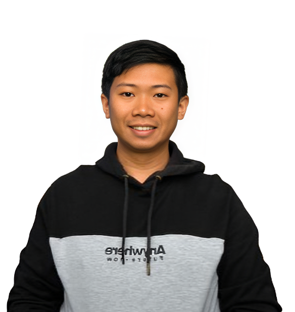

Justine Noel R. Valladores

SUMMARY
I am a software developer learning web development, interested in building useful and easy-to-use applications. I am gaining experience with different programming languages and frameworks, and I enjoy writing clean code and finding practical solutions.
EDUCATION
-
SECONDARY SCHOOL
- Holy Name School Foundation Inc, 2014
-
TERTIARY SCHOOL
- University of Mindanao, 2023
- Bachelor of Science in Information Technology
WORK EXPERIENCE
-
Data Validation - InRiver, 2022
- Validated the e-commerce website to confirm product availability.
- Ensured product information was well displayed and accurate.
-
Technical Support - University of Mindanao, 2022
- Assisted administration with technical problems.
- Performed preventive maintenance on computers to prevent damage.
-
GPS Analyst - Caballes Trucking Inc, 2024-2025
- Monitored tanker drivers to prevent illegal activities.
- Assisted coworkers with technical problems.
- Created reports and backups for CCTV and GPS to ensure business accuracy.
-
IT Specialist/Staff - Sibs, 2025-Present
- Assisted agents with technical issues.
- Troubleshot computers for backups.
- Installed and reformatted computers.
SKILLS
- Proficient in HTML, CSS, JavaScript, and Python. ⭐️⭐️⭐️⭐️
- Troubleshooting ⭐️⭐️⭐️⭐️⭐️
- Strong problem-solving skills and attention to detail. ⭐️⭐️⭐️
- Excellent communication and teamwork abilities. ⭐️⭐️⭐️
- Hardworking and willing to learn ⭐️⭐️⭐️⭐️⭐️
AWARDS AND CERTIFICATIONS
- Best in Capstone - University of Mindanao, 2023
- NCII Holder - Computer Servicing System, 2023
- ITS Holder - Database, 2024
- MTA Holder - Java fundamentals, 2021
OTHERS